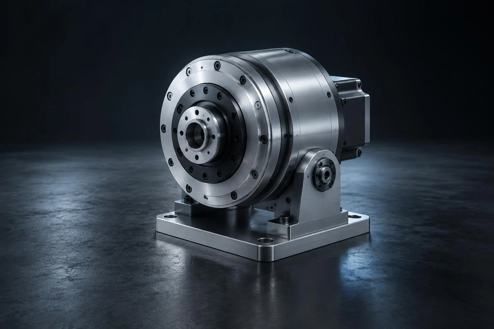

Industrial / Illustrative concept
Precision in motion

- Client / Concept
- Self-initiated illustrative concept
- Industry
- Industrial & Manufacturing
- Services
- Product visualization · Material study
Challenge
How can a dense engineering object communicate precision without losing its functional character?
Creative Direction
A quiet graphite environment, a low camera position and precise highlights reveal the assembly, machined surfaces and circular geometry.
Process
This AI-generated concept explores a reference-led visual direction. A commissioned production would begin with verified CAD, material references and dimensional checks.
Final Visuals
AI-generated concept stillAnimation
Concept motion preview / Animated still sequence
Animated-still concept sequence across the collection. No project-specific production film is available.
Close-up details
Final outcome
An illustrative direction for industrial marketing — not a commissioned project or a claim of verified engineering accuracy.
Next Project